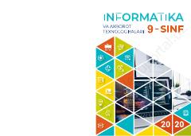

I99-sinf o‘quvchilari uchun informatika va Python dasturlash asoslari bo‘yicha darslik.
Ushbu darslik umumiy o‘rta ta’lim maktablarining 9-sinf o‘quvchilari uchun mo‘ljallangan bo‘lib, mantiq asoslari, algoritmlash va Python dasturlash tili bo‘yicha nazariy hamda amaliy bilimlarni o‘z ichiga oladi. Kitobda kompyuterda masalalarni modellashtirish, dasturlash asoslari va grafik interfeyslar bilan ishlash mavzulari batafsil yoritilgan.